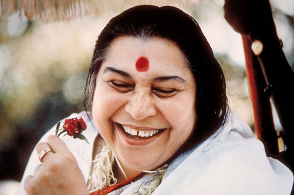
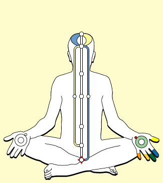

Sahaja Yoga meditation is very well establish for general public where any one can join us any where in the world where we will serve you not to earn from from but give you a joy , love and inner self. A person of any age group can join us at your nearest location
Yeah!!! When we talk about corporate we always talk about how stress full we will be and you know what we have a solution for this stress. We are have free corporate program which will give you a benefits of de-stress yourselves. one call away....
That's one for field where our kids are info and yes they too have stress but more over they need for attention towards studies , they want to be more active , craative and undoubtedly they wants to perform well.Our programs helps students a lot

She is the founder...
Nirmala Srivastava was born in Chindawara, Madhya Pradesh, India to Hindu father and a Christian mother Prasad and Cornelia Salve. Her parents named her Nirmala, which means "immaculate". She said that she was born self-realised. Her father, a scholar of fourteen languages, translated the Koran into Marathi, and her mother was the first woman in India to receive an honours degree in mathematics. Nirmala Srivastava descended from the royal Shalivahana/Satavahana dynasty. Former union minister N.K.P.Salve was her brother and lawyer Harish Salve is her nephew.The Salve surname is one of a number included in the Satavahana Maratha clan.

“Sahaja” in Sanskrit means spontaneous and also born with,” Yoga” means union with God. The potential to the spiritual awakening and ascent is inborn in every human being. This potential is possible to be actualized through a unique living process of Sahaja Yoga. This unique discovery has been done by Shri Mataji Nirmala Devi (in 1970).The process of Sahaja Yoga is spontaneous and natural. It is a technique to awaken the Kundalini Shakti which lies in the sleeping state at the base of the spine (sacrum bone) of each human being. The process of awakening Kundalini is a spontaneous and joy giving process.
There are seven chakras (energy centers) basically within us. These seven chakras are responsible for our physical, emotional and mental well being. Once we get our Self Realisation we feel these centers in the Subtle System within us. As the Kundalini rises and passes through the six centers (which are our energy centers in the spinal cord) and pierces through the fontanel bone area on the top of our head, it nourishes and revitalizes the centers (chakras) so that the person feels relaxed, calm and full of life.When Kundalini rises, she creates a state of thoughtless awareness (Nirvichar Samadhi)